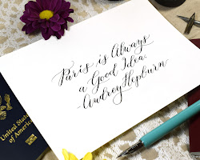
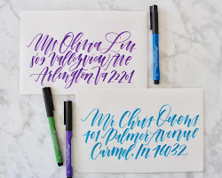
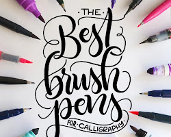
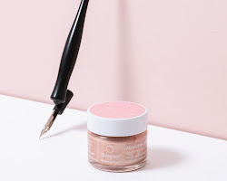
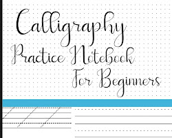

Dip pens

Dip pens are traditional calligraphy pens that use a nib dipped in ink. They come in a variety of
nib sizes and shapes, which allows you to create different line widths and effects.
Brush pens

Brush pens are a type of marker that has a flexible tip that allows you to create both thick and
thin lines. They are a popular choice for modern calligraphy because they are easy to use and
produce smooth, consistent results.
Markers

Markers are another popular choice for modern calligraphy. They come in a variety of colors and line
widths, which gives you a lot of creative freedom.
Ink

The type of ink you use will depend on the type of pen you are using. For dip pens, you will need a
bottled ink that is specifically designed for calligraphy. For brush pens, you can use either
bottled ink or markers.
Paper

The type of paper you use will also affect the look of your calligraphy. Calligraphy paper is
specifically designed to absorb ink evenly, which will help to create smooth, consistent lines.